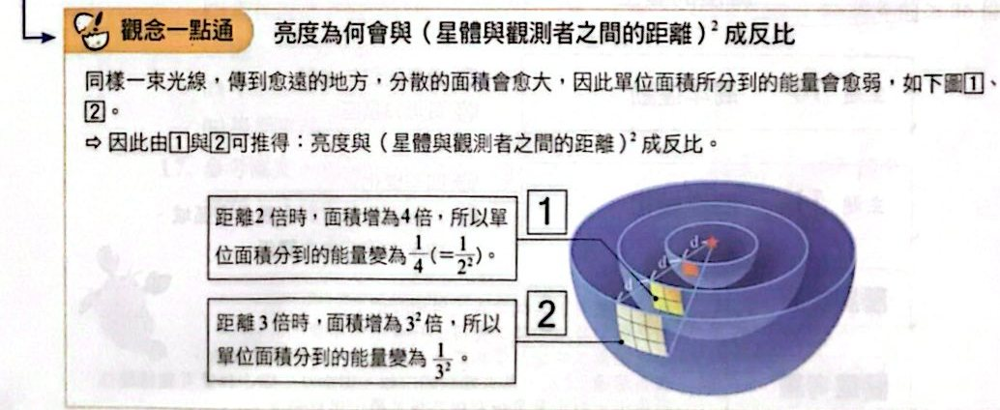
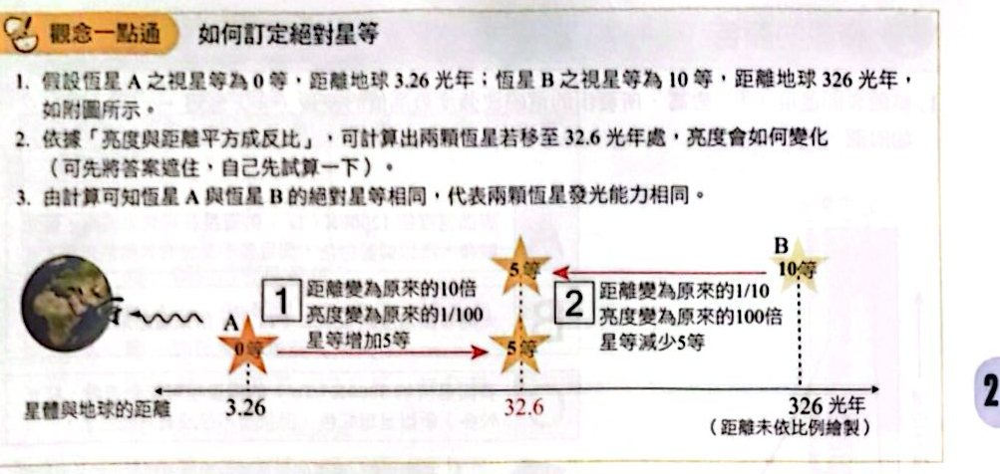
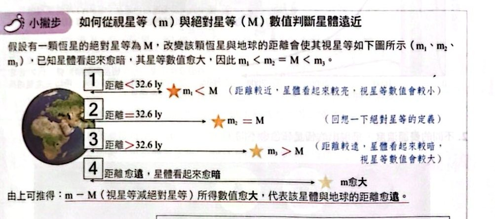
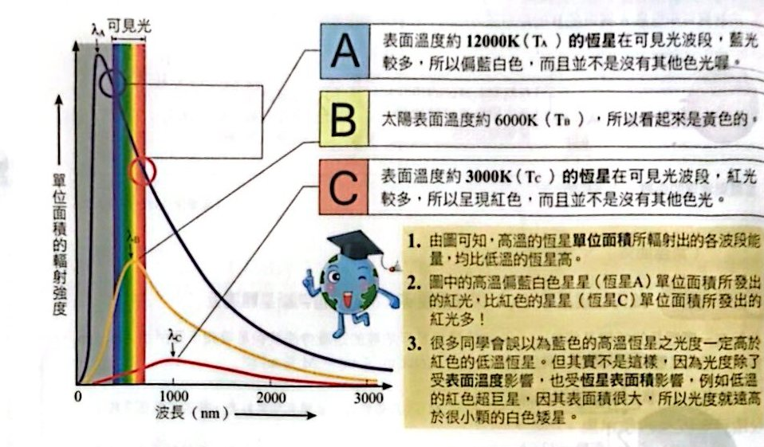
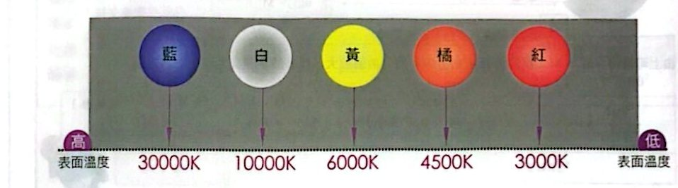

恆星的亮度與光度

觀念一點通：亮度為何與（距離）²成反比（講義 p.20）

觀念一點通：如何訂定絕對星等（講義 p.21）

小撇步：從視星等與絕對星等判斷星體遠近（講義 p.21）
恆星的顏色

不同表面溫度的恆星輻射曲線（講義 p.22）

表面溫度與恆星顏色（講義 p.22）
小試身手
小試 1–9 預備五顆恆星的資料表（先看這張表）
看答案與詳解收起
答（資料表，見下方題目）
解這張表是 1～9 題共用：
| 星名 |
A |
B |
C |
D |
E |
| 絕對星等 M |
7 |
4 |
3 |
5 |
6 |
| 視星等 m |
3 |
2 |
3 |
7 |
5 |
| m − M |
−4 |
−2 |
0 |
＋2 |
−1 |
| 顏色 |
紅 |
白 |
藍 |
黃 |
紅 |
| 與 32.6 光年比 |
近 |
近 |
剛好 |
遠 |
近 |
看答案與詳解收起
答(D) D 星
解這題在考什麼：亮度看視星等，數字愈大愈暗。視星等 A3、B2、C3、D7、E5，D（7）最大＝最暗。
看答案與詳解收起
答(C) C 星
解這題在考什麼：表面溫度看顏色：藍＞白＞黃＞橘＞紅。C 是藍色，表面溫度最高。
看答案與詳解收起
答(D) D 星
解這題在考什麼：m − M 愈大，離地球愈遠。m−M：A＝−4、B＝−2、C＝0、D＝＋2、E＝−1 ⇒ D 最大，最遠。
看答案與詳解收起
答(E) 僅 A、B、E 星
解這題在考什麼：10 秒差距＝32.6 光年。m ＜ M ⇒ 距離 ＜ 32.6 光年。
- A：3 ＜ 7 ✓ B：2 ＜ 4 ✓ E：5 ＜ 6 ✓
- C：3＝3（剛好 32.6 光年，不算少於） D：7 ＞ 5（較遠）
看答案與詳解收起
答(D) 4 顆
解這題在考什麼：肉眼極限視星等 6 等，視星等 ≤ 6 才看得到。A3、B2、C3、E5 都可見；D 是 7 等，肉眼看不到 ⇒ 共 4 顆。
看答案與詳解收起
答(C)
解這題在考什麼：距離變 1/10 ⇒ 亮度變 100 倍 ⇒ 視星等減少 5；光度、絕對星等、表面溫度（顏色）都不變。
- (A) ✗ 亮度是增加 100 倍，不是 10 倍。
- (B) ✗ 光度是星體本身的發光強度，不會因為距離改變。
- (C) ○ D 的視星等 7 − 5＝2 等。
- (D) ✗ 顏色由表面溫度決定，與距離無關。
- (E) ✗ 絕對星等是定義在固定距離，不會因為星體移動而改變，仍是 5。
看答案與詳解收起
答(D) D 星
解這題在考什麼：太陽表面溫度約 6000 K，呈黃色。D 星是黃色，表面溫度與太陽最接近（與距離無關）。
看答案與詳解收起
答(D) 1／2.512⁴
解這題在考什麼：亮度看視星等。D 的視星等 7、A 的視星等 3，D 比 A 暗 4 等。星等差 4 ⇒ 亮度差 2.512⁴ 倍，D 較暗，所以 D 的亮度是 A 的 1/2.512⁴。
看答案與詳解收起
答(C) 表面溫度最高
解這題在考什麼：單位面積的輻射量只由表面溫度決定（光度∝表面積×T⁴，再除以表面積就剩 T⁴）。C 是藍色，表面溫度最高，所以單位面積輻射量最高。看起來最亮（亮度）與光度、體積、距離都不是這題的原因。
看答案與詳解收起
答(D) 紅色恆星與火山熔岩發出的紅光
解這題在考什麼：恆星的顏色來自高溫物體的熱輻射（溫度決定波長分布），紅色恆星與熔岩發出的紅光都是熱輻射；煙花、瓦斯燃燒藍焰、花的顏色則來自原子發光或反射，原理不同。
看答案與詳解收起
答(C)(E)
解這題在考什麼：恆星顏色看表面溫度；行星的顏色來自反射與表面物質。
- (A) ✗ 參宿四是恆星（表面溫度約 3000 K 的紅超巨星），火星是行星（紅色因氧化鐵），兩者不能類比。
- (B) ✗ 參宿四也輻射藍光，只是紅光較多；恆星是連續光譜。
- (C) ○ 顏色一樣但原因不同：參宿四因低溫，火星因表面氧化鐵。
- (D) ✗ 火星是行星，只反射太陽光，發光能力遠低於參宿四，看起來亮只因為距離近很多。
- (E) ○ 火星與地球距離會改變，所以視星等會改變。
看答案與詳解收起
答約 2.5 倍
解這題在考什麼：光度 ∝ 表面積（R²）× T⁴。
- 絕對星等差 ＝ 5.0 − 0.0 ＝ 5 ⇒ 光度比 L_A／L_B ＝ 100。
- L ∝ R²T⁴ ⇒ L_A／L_B ＝ (R_A／R_B)² × (T_A／T_B)⁴ ＝ (R_A／R_B)² × 2⁴ ＝ 100
- (R_A／R_B)² ＝ 100／16 ＝ 6.25 ⇒ R_A／R_B ＝ 2.5。
看答案與詳解收起
答(E) 天狼星、南河三、參宿四
解這題在考什麼：輻射曲線越高、峰值波長越短 ⇒ 表面溫度越高。
- 甲：峰值最高、波長最短 ⇒ 溫度最高 ⇒ 天狼星（藍白色，約 10000 K）
- 乙：居中 ⇒ 南河三（黃白色，約 6500 K）
- 丙：最低、波長最長 ⇒ 參宿四（紅色，約 3000 K）